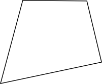
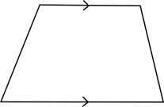
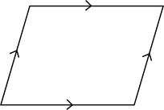
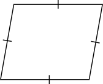
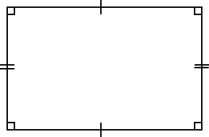
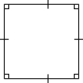

Repetition: 3. Matematiskt tänkande och matematiska metoder
Diskutera parvis och fundera på följande
- Varför måste matematiken som språk vara exakt?
- Vad är skillanden med tre gånger fyra och fyra gånger tre?
Uppgifter
Kombinera rätt geometrisk figur med rätt definition. Välj bland
FyrhörningKvadratParallellogramParallelltrapetsRektangelRombBenämning Påstående Har fyra sidor. Har fyra sidor där två sidor är parallella. Har fyra sidor där motstående sidor är parallella. Har fyra lika långa sidor. Har fyra sidor där motstående sidor är parallella och vinklarna räta. Har fyra lika långa sidor och räta vinklar. Benämning Påstående Fyrhörning Har fyra sidor. Parallelltrapets Har fyra sidor där två sidor är parallella. Parallellogram Har fyra sidor där motstående sidor är parallella. Romb Har fyra lika långa sidor. Rektangel Har fyra sidor där motstående sidor är parallella och vinklarna räta. Kvadrat Har fyra lika långa sidor och räta vinklar. Välj rätt alternativ för figuerna. Du kan kryssa i flera val för varje figur.
Påstående Fyrhörning Kvadrat Parallellogram Parallelltrapets Rektangel Romb       Påstående Fyrhörning Kvadrat Parallellogram Parallelltrapets Rektangel Romb - Lös följande ekvation, \( 4x - 9 = 2(x+5) \) och korrigera felen nedan.
\( \begin{array}{rcl} 4x - 9 & = & 2(x+5) \\ 4x - 9 & = & 2x + 5 \\ 4x + 2x & = & 5 - 9 \\ 6x & = & -4 \\ x & = & -\dfrac{6}{4} = -\dfrac{3}{2} \\ \end{array} \)
Den rätta lösningen är
\( \begin{array}{rcl} 4x - 9 & = & 2(x+5) \\ 4x - 9 & = & 2x + 10 \\ 4x - 2x & = & 10 - 9 \\ 2x & = & 1 \\ x & = & \dfrac{1}{2} \\ \end{array} \)
Felen är
- Rad 2. \( 2 \cdot 5 = 10 \) är inte uträknat.
- Rad 3. Termerna är inte de motsatta, \( +2x \) borde vara \( -2x \) och \( -9 \) borde vara 9.
- Rad 5. Divisionen är fel. Det skall delas med talet framför \( x \). Det borde ha delats med 6.
- Ordna uträkningarna i rätt ordning så att lösningen av ekvationen är logisk och korret.
Välj bland följande uttryck
\( 4x-4 = 3x+6 \)\( x = 10 \)\( 4x -3x = 6 +4 \)Uttryck Ordningsföljd \( 4(x-1) = 3(x+2) \) (1.) (2.) (3.) (4.) Uttryck Ordningsföljd \( 4(x-1) = 3(x+2) \) (1.) \( 4x-4 = 3x+6 \) (2.) \( 4x -3x = 6 +4 \) (3.) \( x = 10 \) (4.) - Ordna uträkningarna i rätt ordning så att lösningen av ekvationen är logisk och korret.
Välj bland följande uttryck
\( - 3x = 10 \)\( x-2 = 8+4x \)\( \dfrac{4(x-2)}{4} = 4(2+x) \)\( x = -\dfrac{10}{3} \)\( x - 4x = 8 +2 \)Uttryck Ordningsföljd \( \dfrac{x-2}{4} = 2+x \) (1.) (2.) (3.) (4.) (5.) (6.) Uttryck Ordningsföljd \( \dfrac{x-2}{4} = 2+x \) (1.) \( \dfrac{4(x-2)}{4} = 4(2+x) \) (2.) \( x-2 = 8+4x \) (3.) \( x - 4x = 8 +2 \) (4.) \( - 3x = 10 \) (5.) \( x = -\dfrac{10}{3} \) (6.) - Varför får man inte dividera med noll?
Vi börjar med att se på \(\dfrac{12}{4} = 3 \), som betyder att \(3\cdot 4 = 12 \).
Allmänt betyder det att \(\dfrac{a}{b}=c \Leftrightarrow c\cdot b =a \).
Om vi tillåter \(b=0 \) får vi att
\(1 \cdot 0 = \) något,
\(2 \cdot 0 = \) något annat och
\(3 \cdot 0 = \) något tredje.
Men vi vet från tidigare att då vi multiplicerar med noll skall vi få svaret noll, tex \(2 \cdot 0 = 0 \) och \(3\cdot 0 =0 \).
Då kan vi inte ha fall där vi inte vet vad noll gånger något är.
Därför får vi inte dividera med noll.